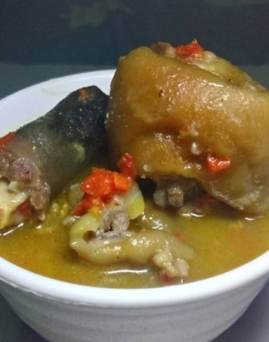
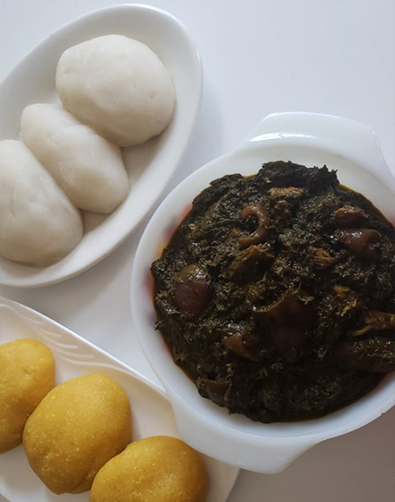
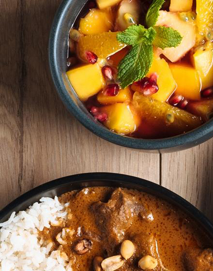
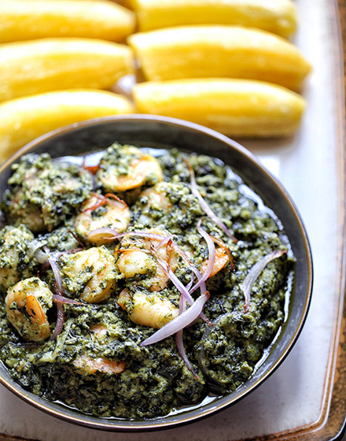

Le meilleur de la cuisine africaine à Bruxelles
Nous avons sélectionné pour vous le top 5 des restaurants africains de la ville. Passez vos commandes directement en ligne en cliquant sur l'un des restaurants ci dessous.
PAPA BENJI
Bouillon de chèvre de boeuf et de viande de brousse.

SAGA AFRICA
Fufu & Eru spécialité du sud ouest camerounais.

ATCHEKE CLUB
Le bon atcheke de cote d'ivoire.

MBOA'SU
Du bon ndolé de crevette du Wouri. spécialité culinaire du peuple Cameroun
